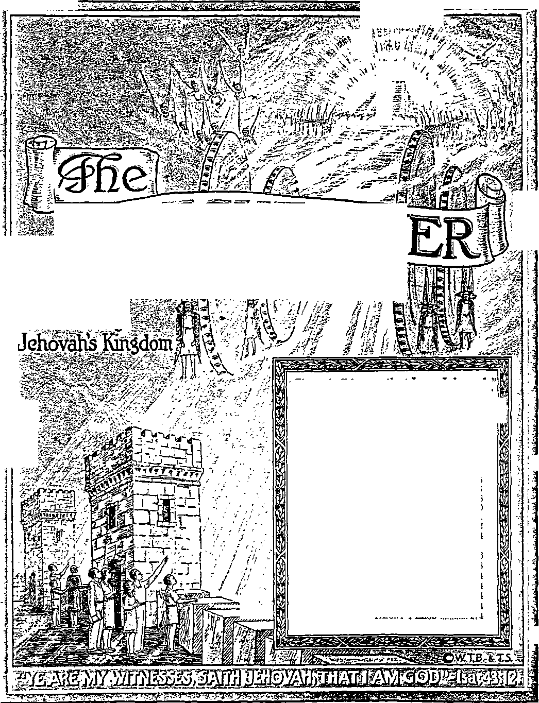

Announcing
■
i.l ■ i
AV' * ■
WMCHTXW
«l
34ft
•<»7r
-Ezekiel 35.15.
Vol. LXVII Semimonthly No. 18
CONTENTS
SEPTEMBER IS, 1946
Children in the “Time of the End” „ 275
Disadvantages in the Last Days Admonition ...................................
Nurture .........................................
276
278
280
Parental Examples and Demonstrators 281
Companionship Rather than Division .. 282
The Love of David and Jonathan.
Gilead Sends Forth
Its Seventh Class....................
Field Experiences............................
Notice of Annual Meeting.............
“Watchtower” Studies ..................
“Let God Be True”..........................
“Equipped for Evert Good Work” “New Song” Testimony Period.....
284
286
288
274
274
274
274
274
Published Semimonthly By
WATCH TOWER BIBLE & TRACT SOCIETY 117 Adams Street - - Brooklyn 1, N.Y., U.S.A
OrnctBs
N. H. Knobb. President W. EL Van Ambubgh, Secretary
“And all thy children shall be taught of Jehovah; and great shall be the peace of thy children.” - hatah 54:13.
THE BIBLE CLEARLY TEACHES
THAT JEHOVAH Is the only true God, from everlasting to everlasting, and Is the Maker of heaven and earth and Giver of life to his creatures; that the Word or Logos was the beginning of his creation and his active agent In creating all other things; and that the creature Lucifer rebelled against Jehovah and raised the issue of His universal sovereignty;
THAT GOD created the earth for man, made perfect man for the earth and placed him upon It; that man yielded to unfaithful Lucifer, or Satan, and willfully disobeyed God’s law and was sentenced to death; that by reason of Adam’s wrong act al) men are born sinners and without the right to life;
THAT THE LOGOS was made human as the man Jesus and suffered death In order to produce the ransom or redemptive price for obedient men: that God raised up Christ Jesus divine and exalted him to heaven above every other creature and clothed him with all power and authority as head of God’s new capital organization;
THAT GOD’S CAPITAL ORGANIZATION is a Theocracy called Zion, and that Christ Jesus Is the Chief Officer thereof and is the rightful King of the new world; that the faithful anointed followers of Christ Jesus are Zion’s children, members of Jehovah's organization, and are His witnesses whose duty and privilege it Is to testify to Jehovah's supremacy and declare his purposes toward mankind as expressed in the Bible;
THAT THE OLD WORLD, or Satan’s uninterrupted rule, ended A.D. 1914, and Christ Jesus has been placed by Jehovah upon the throne, has ousted Satan from heaven, and now proceeds to vindicate His name and establish the “new earth";
THAT THE RELIEF and blessings of the peoples can come only by Jehovah’s kingdom under Christ, which has begun; that His next great act Is to destroy Satan's organization and establish righteousness completely in the earth ; and that under the Kingdom the people of good-will surviving Armageddon will carry out the divine mandate to “fill the earth" with righteous offspring, and that the human dead In the graves will be raised to opportunities of life on earth.
ITS MISSION
THIS journal Is published for the purpose of enabling the people to know Jehovah God and his purposes as expressed in the Bible. It publishes Bible Instruction specifically designed to aid Jehovah’s witnesses and all people of good-wilL It arranges systematic Bible study for Its readers and the Society supplies other literature to aid in such studies. It publishes suitable material for radio broadcasting and for other means of public instruction in the Scriptures.
It adheres strictly to the Bible as authority for its utterances. It is entirely free and separate from all religion, parties, sects or other worldly organizations. It is wholly and without reservation tor the kingdom of Jehovah God under Christ his beloved King. It Is not dogmatic, but Invites careful and critical examination of Its contents in the light of the Scriptures. It does not Indulge in controversy, and Its columns are not open to personalities.
Yeablt Scbscbiption Price
United States, *1.00; all other countries, $1 50, American currency; Great Britain, austbalasia, and South Africa, 6a. American remittent es should be made by Postal Note cr by Postal or Express Money Order or by Bank Draft. Outside of the United States remittances should be made direct to the respective branch offices, Remittances from countries other than those mentioned may be made to the Brooklyn office, but by International Postal Money Order only.
Fobeion Ornczs
Australia — ...... —_____7 Beresford Rd_ Strathtleid, N. S. W.
Canada________40 Irwin Ave.. Toronto 5. Ontario
England 34 Craven Terrace. London, W 2
India ____________________________— .. 167 Love Lane, Bombay 27
Newfoundland ________ -■ —-------P. O. Box 521, St John’s
New Zealand_______.- 177 Daniell St.. Wellington. S. 1
Philippine Islands ... 1210-B Oroquieta St, Mnnila
South Africa....................-— 623 Boston House, Cape Town
Please address the Society In every case.
Translations of this journal appear In several languages.
ALL SINCERE STUDENTS OF THE BIBLE who by reason of Infirmity, poverty or adversity are unable to pay the subscription price may have The Watchtower free upon written application to the publishers, made once each year, stating the reason for so requesting it We are glad to thus aid the needy, but the written application once eacb year is required by the postal regulations.
Notice to Subscribers: Acknowledgment of a new or a renewal subscription will be sent oniy when requested. Change of address, when requested, mav he expected to appear on address label within one month. Old and new add 1 esses must be given. A renewal blank (carrying notice of expiration! will be sent with the journal one month before the subscription expires.
Printed in the United States of America
Entered as seconurdass matter at the post office at Brooklyn, N. F., under the Act of March 3, 1879.
NOTICE OF ANNUAL MEETING
The regular annual business meeting of the Watch Tower Bible and Tract Society will be held Tuesday, October 1, 1946, at 10: 00 a.m., in the registered office of the Society located in the Wabash Building, 410 Liberty Avenue, Pittsburgh 10, Pennsylvania.
Notices and proxy forms will be mailed to the members. Any member who for any reason cannot attend in person should mail his proxy to the office of the secretary of the Watch Tower Bible and Tract Society, 124 Columbia Heights, Brooklyn 2, New York, on or before September 20, 1946.
“WATCHTOWER” STUDIES
Week of November 3: “Children in the ‘Time of the End’,” H 1-19 inclusive, The Watchtower September 15, 1946.
Week of November 10: “Children in the ‘Time of the End’,” t 20-40 inclusive, The Watchtower September 15, 1946.
“LET GOD BE TRUE”
This new book, of 320 pages, was a feature release at the recent Glad Nations Theocratic Assembly in Cleveland, Ohio. Its 24 chapters discuss simply and with many Scripture proofs the primary Bible teachings and questions at issue today. It supplies a long-felt need for doctrinal instruction of this basic kind. All Bible texts cited or quoted are listed in an index with page numbers, and there is also a subject index for quick references. The book is bound in dark-green cloth, with title stamped in gold. It is mailed postpaid, anywhere, at 25c a copy.
“EQUIPPED FOR EVERY GOOD WORK”
This is a new 384-page handbook of vital information on the Holy Scriptures and brings together much cyclopedic material to aid in better understanding the Bible and presenting its message. The book is bound in maroon cloth, gold-stamped and handsomely embossed. Its first 20 lessons are grouped under the heading “Preparing the Way for Bible Study”. Then follow 33 lessons on “The Hebrew Scriptures” and, next, 17 lessons on “The Greek Scriptures”. Interspersed throughout are valuable illustrations, maps, and tables, with finally a “Scriptural Summary, Without Comment, of Primary Doctrines”. It is mailed, postpaid, at 50c a copy.
“NEW BONG” TESTIMONY PERIOD
The month-long “New Song” Testimony Period falls in October of this year. All throughout it the singing of the new song to Jehovah’s praise will take on a very new feature, and that is the Society’s magazine Awake! first introduced to the world at the Glad Nations Theocratic Assembly in Cleveland this past August. Kingdom publishers among English-speaking populations will therefore specialize for this one month on taking subscriptions for Awake! at the regular rate of $1 a year. Individual copies, five cents. Every person anxious to join in singing the new song of God’s kingdom should find special incentive in taking part in the Testimony during October in offering Awake!
Vol. LXVII September 15, 1946 No. 18
"He who reverences the Eternal has strong ground for confidence; his very children win security." —Prov. 14:26, Moffatt.
TEHOVAH provided for children to be brought I into this earth. He endowed the first human pair J with the wondrous power to bring forth children in their image and likeness.
2 The wisest man of ancient times said to his fellow man: “Just as thou knowest not what is the way of the spirit, when the body is in the womb of her that is with child, even so canst thou not know the work of God, who maketh all.” (Eccl. 11: 5, Rotherham) But, admittedly, the eternal God knows how his spirit or active force operates to make bones and other parts of the body grow in the womb until the birth of the child by its mother. Marveling at the universal knowledge and insight of the eternal Creator, the psalmist David sings: “0 Jehovah, thou hast searched me, and known me. For thou didst form my inw’ard parts: thou didst knit me together in my mother’s womb [where thou didst give me protective covering]. I will give thanks unto thee; for I am fearfully and wonderfully made: wonderful are thy works; and that my soul knoweth right well. My frame was not hidden from thee, when I was made in secret, and curiously wrought in the lowest parts of the earth. Thine eyes did see mine unformed substance; and in thy book they were all written, even the days that were ordained for me, when as yet there was none of them.” (Ps. 139:1,13-16, Am. Stan. Ver., margin) Under present conditions it is said: “Man that is born of a woman is of few days, and full of trouble” (Job 14:1); but wonderful is God’s promise of conditions during the time of his new heavens and new earth. “As the days of a tree shall be the days of my people, and the work of their hands shall my chosen ones enjoy to the end. They- shall not labor in vain, nor bring forth children for [sudden] destruction; for they are a race of the Lord’s blessed ones, and their offspring shall remain with them.”—Isa. 65:17, 22, 23, An American Translation.
8 According to the record of creation, Jehovah
1. As to children, what provision did Jehovah make?
2. Who knows how formation of a child for birth takes place? and what about childbirth during the new heavens and new earth?
3. What instructions did God give Adam and Eve as to rearing children? God gave no detailed instructions to the first human couple as to how to rear their children. He merely blessed them and said: “Be fruitful, multiply, fill the earth, and subdue it; have dominion over the fish of the sea, the birds of the air, the domestic animals, and all the living things that crawl on the earth!” (Gen. 1:28, An Amer. Trans.) When they did bring forth their first child, Cain, who became a brother-killer, it was at a time when they had disregarded Jehovah’s rule of conduct for them and sinned. Hence instructions to them as to rearing their children would hardly then be given by the Creator. There is no report of such. The murderous course of Cain argues against such as having been given then. Adam’s failure to fear Jehovah God brought death and insecurity on his children.
4 About sixteen centuries pass, and it is now the time of the end of the “world that then was”, which was’ an “old world” being ready to perish, it being a “world of the ungodly”. (2 Pet. 3:6; 2:5) Then Jehovah God is reported as giving instructions to a father respecting his children for their security and preservation. This father is Noah, and his children number three sons, all now married. Jehovah God instructs Noah to build a huge ark as a refuge against a global flood, saying: “But with thee ■will I establish my covenant; and thou shalt come into the ark, thou, and thy sons, and thy wife, and thy sons’ wives with thee. And of every living thing of all flesh, two of every sort shalt thou bring into the ark, to keep them alive with thee; they shall be male and female.” (Gen. 6:13-19) If Noah had not feared and reverenced Jehovah, and proved it by carrying out instructions, no security and place of refuge would have been provided for Noah’s children. But, to the contrary, it is written: “By faith Noah, being warned of God of things not seen as yet, moved with fear, prepared an ark to the saving of his house; by the which he condemned the world, and became heir of the righteousness which is by faith.” (Heb. 11:7) Hence it was true to fact for
4. In connection with Noah, how la it proved that fear of Jehovah wins security for children?
the wise man to say: “He who reveres the Lord has a strong ground of confidence, in which his children also will find a refuge. Reverence for the Lord is a fountain of life, by which to avoid the snares of death.”—Prov. 14: 26, 27, An Amer. Trans.
5 About 450 years roll by, and the time has arrived for the end of the Canaanite cities of Sodom and Gomorrah down by the plain of the Jordan river. In Sodom the righteous man Lot, who lived there with his wife and two married daughters, was vexed by the filthy conduct of the Sodomites. (2 Pet. 2:6-9) Miles away, up in the mountains, lived Lot’s faithful uncle Abraham and his wife Sarah. Being advised of Sodom’s coming destruction, Abraham pleaded with -Jehovah’s angel for the preservation of the righteous souls inside her. Not finding enough righteous ones therein to let the entire city stand, Jehovah’s angels warned Lot to get out of the city with all his family relationship, for “Jehovah hath sent us to destroy it”. In fear and reverence toward God, Lot warned his relationship and, as a result, his two daughters took refuge with him and his wife. Next morning, at sunrise, the angels hurried Lot and his three fellow refugees out of Sodom to a place of security and refuge. His wife, forgetting the fear of Jehovah, looked back to Sodom and got caught in the snares of death. But had it not been for Lot’s fear and reverence of Jehovah God, his two children would not have won security and found refuge when fiery death rained down upon Sodom. —Gen. 18: 20-33; 19:1-30.
’ Abraham, afar off in the mountains around Mamre (or Hebron), was well out of the way of danger that threatened his nephew Lot and the children. Because of Abraham’s godly fear, Jehovah God gave him instructions as to how to raise his children, well knowing that such instructions would be carried out toward the children. Jehovah said: “All the nations of the earth shall be blessed in him. For 1 know him, that he will command his children and his household after him, and they shall keep the way of the Lord [Jehovah], to do justice and judgment; that the Lord may bring upon Abraham that which he hath spoken of him.” Later Jehovah said to Isaac, Abraham’s faithfully instructed son: “In thy seed shall all the nations of the earth be blessed; because that Abraham obeyed my voice, and kept my charge, my commandments, my statutes, and my laws.” (Gen. 18:18,19; 26:4,5) Because of Abraham’s faith and reverence toward Jehovah God, the persons out of all nations and families of the earth who have become his children by faith have gained a blessing. Such blessing has come through Abraham’s descendant, Christ Jesus, 5. In connection with Lot, how is it proved that Godly fear wins security for children?
6. Because of Godly fear what instructions did Abraham receive? and with what benefit to believers in Christ? and it means eternal security and refuge unto eternal life.
disadvantages in the last days
T Now we are in the “time of the end”. (Dan. 11:35,40; 12:4,9) This “time of the end” is the period of time beginning with A.D. 1914 and closing with the battle of Armageddon, and it shows that this world of which Satan the Devil is the god is in its last days and that its time is now short. Christ Jesus referred to this final period as the “consummation [synteleia] of the world”, and he described the outstanding events which would take place in combination during this significant period. By these we would know that this world is drawing near to its everlasting destruction and that the final end of this eventful period at Armageddon means, therefore, the destruction of this world. (Matt. 24:3-51; 25:1-46) For those who seek a way to survive such destruction of the world in order to enter into the blessings of the righteous new world of God’s creation a refuge and security must be provided now. Naturally parents who love righteousness desire such refuge and security for their beloved children also. Their desire is not beyond being satisfied. The inspired statement at Proverbs 14: 26, 27 shows that the parents’ fear of Jehovah God plays a great part toward providing such a refuge and security for the children. God lays unshirkable responsibilities upon parents with regard to their children, and parents show fear of God by discharging such responsibilities.
8 That there would be great oppositions and hindrances to the parents’ and children’s exercising the fear of God in the time of the end the Bible foretold. In describing the difficult situation that would then obtain, the apostle Paul writes to an overseer of the church: “This know also, that in the last days perilous times shall come. For men shall be lovers of their own selves, covetous, boasters, proud, blasphemers, disobedient to parents, unthankful, unholy, without natural affection, trucebreakers, false accusers, incontinent, fierce, despisers of those that are good, traitors, heady, highminded, lovers of pleasures more than lovers of God; having a form of godliness, but denying the power thereof: from such turn away. Yea, and all that will live godly in Christ Jesus shall suffer persecution. But evil men and seducers shall wax worse and worse, deceiving, and being deceived.”—2 Tim. 3:1-5,12,13.
’ To add to this, the prophet Daniel in a description of the stirring events of the “time of the end” tells of the inroads and aggressions then to be made 7. In what important period are we now? and what provision may be made for children, and by whom?
8 . What difficulties in the way of fear toward God were foretold to be In the last days?
9 As affecting children, what did Daniel foretell concerning the “time of rhe end"?
by the totalitarian combine of politics and religion and symbolically called “the king of the north”. (Dan. 11: 35-40) Besides foretelling that this totalitarian political-religious combine of the north would “honour the god of forces”, Daniel said it would invade many fields of interest and concern to the people : “He shall enter also into the glorious land, and many countries shall be overthrown: ... he shall stretch forth his hand also upon the countries.” (Dan. 11: 41, 42) One of those countries or fields of popular rights and interest is the upbringing and education of the children. “The glorious land” that is invaded refers to the realm of Jehovah’s people to whom He has given the glory of his bright-shining truth and service. In other words, this totalitarian “king of the north” would try to take over the children and bring them up in support of a total state and a total religion. Despite the recent overthrow of the Nazi-Fascist-religious organization, the totalitarian rule of thought still prevails in religious circles and also in many political circles allied with religion. One political government has felt disgust at the deceptions and oppressions that religion has practiced upon the people, and it has set up the arrangement that the children shall not be taught anything pertaining to God until they are eighteen years of age, at which time they will be intelligent enough to make a choice for themselves whether to believe in God or not. Meanwhile, however, the child shall get the education that the totalitarian power prescribes.
10 Any political rule, whether totalitarian or so-called “democratic”, that deprives children of instruction by God-fearing parents is wrong. It calls for a united decision by parents and children as expressed by Christ’s apostles: “One must obey God rather than men.” (Acts 5:29, Moffatt) The word translated “obey” which the apostles used is a compound word (peitharchein) meaning “obey one in authority”; and the authority to be obeyed in this instance is the Supreme Authority, Jehovah God. (Rom. 13:1) God-fearing parents who keep in harmony with His Word will teach their children that God’s laws and commandments are one’s supreme obligations and that it is always right to obey these, politics to the contrary. If political governments do not believe we are living in the “time of the end” and in the “consummation of the world” and hence do not provide a true refuge and security against the world disaster, then the parents cannot afford to depend upon the politicians and their religious allies. The God-fearing parents themselves must take steps looking to the refuge and security of the children during the universal war of Armageddon;
10 How should parents deal with the attempt by totalitarian rule to depiIve children of Godly Instruction? and this they must do in harmony with God’s instructions. Thus they show their fear of Jehovah God.
11 The Bible is plain that the child’s first instruction must come from its own parents, and such instruction must include teaching about Jehovah God and his works. In the Theocratic nation of Israel under God’s law through Moses, all parents were commanded to instruct their sons and daughters about the Lord God. This was important, for it guaranteed that the nation’s future citizens would be God-fearing and the nation would thus continue to walk in God’s way. (Ps. 78: 3-8) This would work for the national salvation as well as the children’s salvation. In his farewell to Israel the inspired prophet Moses said: “What nation is there so great, that hath statutes and judgments so righteous as all this law, which I set before you this day? Only take heed to thyself, and keep thy soul diligently, lest thou forget the things which thine eyes have seen, and lest they depart from thy heart all the days of thy life: but teach them thy sons, and thy sons’ sons; specially the day that thou stoodest before the Lord thy God in Horeb, when the Lord said unto me, Gather me the people together, and I will make them hear my words, that they may learn to fear me all the days that they shall live upon the earth, and that they may teach their children.” (Deut. 4:8-10) Thus although they had not seen any form of this unseeable God, they must put forth faith in his existence and must demonstrate their faith by keeping his laws and commandments. Although they had not seen the God they were obeying, yet the resulting benefits would be clearly seen, namely, life in peace and happiness.
12 The parents were under orders to inculcate love of God to the full in their offspring. Jesus Christ said the first and great commandment was to love God fully, and the portion of the law from which Jesus then quoted reads as follows: “Hear, 0 Israel: Jehovah our God is one Jehovah: and thou shalt love Jehovah thy God with all thy heart, and with all thy soul, and with all thy might. And these words, which I command thee this day, shall be upon thy heart; and thou shalt teach them diligently unto thy children, and shalt talk of them when thou sittest in thy house, and when thou walkest by the way, and when thou liest down, and when thou risest up.” (Deut. 6:4-7, Am. Stan. Ver.) Thus from waking up till lying down to rest, and in all the relations of family life, the parents were to think of the good of their children and seek to increase their knowledge and love of the Creator, the divine Source of life everlasting. The matter was not to be left to a
11. In Israel of old why was child instruction important to the nation? 12. How were parents to inculcate love of God In their children? rabbi or Sabbatb-school teacher or a religious school, but the parents must be every-day teachers and day-long instructors of the children in the things of God.
13 No government, political or ecclesiastical, had the right to overstep into the field or territory of this right and duty of parents. To the contrary, Israel’s Theocratic government back there must respect and uphold this right and duty of parents and must remind them of God’s law upon the matter. Hence Moses said to those in authority in the nation: “In the feast of tabernacles, when all Israel is come to appear before Jehovah thy God in the place which he shall choose, thou shalt read this law before all Israel in their hearing. Assemble the people, the men and the women and the little ones, and thy sojourner that is •within thy gates, that they may hear, and that they may learn, and fear Jehovah your God, and observe to do all the words of this law; and that their children, who have not known, may hear, and learn to fear Jehovah your God, as long as ye live in the land whither ye go over the Jordan to possess it.” (Deut. 31:9-13, Am. Stan. Ver.) This ancient type sets the pattern for Godfearing persons today, as we are about to enter into the new world of righteousness.
14 The instructions to Christian parents and children are equally plain in the writings of Christ’s apostles. When a father and mother give teaching concerning God and his Word, they are “in the Lord” and should be obeyed, because then the disobedience is not simply against the father and mother but against the Lord. In this regard the apostle writes: “Children, obey your parents in the Lord: for this is right. Honour thy father and mother; which is the first commandment with promise; that it may be well with thee, and thou mayest live long on the earth. And, ye fathers, provoke not your children to wrath: but bring them up in the nurture and admonition of the Lord.” (Eph. 6:1-4) Fathers will provoke wrath in their offspring, or irritate and exasperate them, by overlooking them and neglecting them in the spiritual way, because spiritual things are in the opposite direction from wrath, irritation and exasperation.
13 Because of this obligation upon parents, one of the qualifications required of an overseer and of a- special servant in the Christian organization was that they obey this rule regarding their offspring. Concerning this qualification the apostle writes: “The overseer then must be irreproachable, a husband of one wife, vigilant, sedate, orderly, hospitable, fit to teach; presiding well over his own
13. How must Israel’s government remind parents of this duty?
14. How are the apostle’s writings on this matter equally plain to parents and children? and how do fathers provoke children?
15. Hence what was one of the qualifications respecting married servants appointed in the church?
family, having the children in subjection with all dignity; (but if any one knows not how to preside over his own family, how can he take care of a congregation of God?) Let assistants be husbands of one wife, presiding well over their own families.” (1 Tim. 3:2,4,5,12, The Emphatic Diaglott) “Appoint elders in each city, as I directed thee; if any one is irreproachable, a husband of one wife, having believing children, not under an accusation of profligacy, or of insubordination.”—Titus 1: 5, 6, Diaglott.
ADMONITION
13 In the household the Christian parents must be faithful witnesses of Jehovah God to their own children. They must be such without shame to confess Jehovah God and Jesus Christ. For this they must, of course, be well-informed themselves, and hence should study for the sake of fulfilling this duty to their young. They must be not merely material breadwinners and physical caretakers over their own, but must be also spiritual providers. This spiritual provision begins first in the home, and the children should be made to expect it of the parents. In so doing the parents are laying up a better future for their children, that is, a future with a prospect of everlasting life in the new world of uprightness. Paul the apostle writes: “The children ought not to lay up for the parents, but the parents for the children." And on the basis of this rule the apostle endeavored to give the church at Corinth the best of spiritual provision without burden to them, and so he added: “And I will very gladly spend and be spent for you.”—2 Cor. 12:14,15.
17 Jesus, when preaching on the mountainside, said: “What man is there of you, •whom if his son ask bread, will he give him a stone? or if he ask a fish, will he give him a serpent? If ye then, being evil, know how to give good gifts unto your children, how much more shall your Father which is in heaven give good things to them that ask him?” (Matt. 7:9-11) Yes, “if ye then, being evil, know how to give good gifts unto your children: how much more shall your heavenly Father give the holy spirit to them that ask him?” (Luke 11:11-13) By this Jesus showed it is better to give spiritual good things to the young ones than perishable material good things. A parent by giving his offspring merely material comforts, conveniences and worldly education may, in effect, be giving his children a stone, a serpent, a scorpion in disguise. So, give both the material and the spiritual inheritance. Says the proverb: ‘Wisdom is good -with an inheritance: and
16. Besides being material breadwinners and physical caretakers, how else must parents provide for their children?
17. How do parents make a failure when giving just material good things and inheritance to their children?
by it there is profit to them that see the sun. For wisdom is a defence, and money is a defence: but the excellency of knowledge is, that wisdom giveth life to them that have it?’ (Eccl. 7:11,12) Therefore the apostle exhorts: “Bring [children] up in the nurture and admonition of the Lord.”
18 Admonition, according to the sense of the original word that the apostle used, means to put a mind, or put in mind, to remind or warn. The mind of a newborn babe is certainly a blank, an untouched page. But that mind is very tender and easily subject to impressions. Hence the child in its tender years is very impressionable, and what makes an impression upon its mind cuts deep and almost beyond erasure. Then is the time of greatest opportunity for those who brought it into the world to put in its mind thoughts of God, and by daily and repeated remindings of Godly things to build up in it a mind that is filled with God and that inclines toward Him and fears him. The child must become immovable in this mental and heart attitude, so that it will not later be swayed to and fro by surroundings and by opposing impressions. The apostle reminds us of this when he admonishes the Christians to become adults spiritually, “that we henceforth be no more children, tossed to and fro, and carried about with every wind of doctrine, by the sleight of men, and cunning craftiness, whereby they lie in wait to deceive.” (Eph. 4:13,14) An illustration of such immovableness is the firmness of young pupils in the public schools where these God-fearing pupils on patriotic occasions have refused to break God’s commandment against idolatry, as their parents taught them at home.—1 John 5: 21.
19 Fathers and mothers need hardly be told it, but it bears repeating nonetheless, because it is something about which to take fitting action. It is this proverb: “Foolishness is bound in the heart of a child; but the rod of correction shall drive it far from him.” (Prov. 22:15) Or stated otherwise: “Folly is bound to the mind of a child; the rod of correction will remove it far from him.” (An Amer. Trans.) This makes it very plain that the heart or mind of a child, unless properly taught and guided by its guardians, will go in the way of foolishness or folly. For one thing, it is not well acquainted with this world and its selfish-wicked way. Also through its parents it has inherited sinfulness from Adam. Never is it to be forgotten that the devilish demons are on the loose. They are especially bent on mischief against everything pertaining to God and his organization, particularly since they together with Satan have been cast out of heaven and
18. What is “admonition of the Lord”? and why is it necessary?
19. Unless corrected, how will the heart or mind of the child go? and why so especially since Satan’s being cast out of heaven? down to this earth. Hence it is more true now than before A.D. 1914 that mankind has “walked according to the course of this world, according to the prince of the power of the air, the spirit that now worketh in the children of disobedience”. (Eph. 2: 2) More than ever, therefore, the mind and heart of the children of persons consecrated to God need protective knowledge and Scriptural guidance, into right thought and action.
20 If left unconnected and fnee to run a foolish and evil course, the mind or heart of the child in its formative state will become habituated in such folly or foolishness. Referring to the effect of delay in correction, the wise man says: “Because sentence against an evil work is not executed speedily, therefore the heart of the sons of men is fully set in them to do evil. Though a sinner do evil an hundred times [and get away with it], and his days be prolonged, yet surely I know that it shall be well with them that fear God, which fear before him: but it shall not be well with the wicked, neither shall he prolong his days, which are as a shadow; because he feareth not before God.” (Eccl. 8:11-13) Hence if a parent unwisely neglects to correct the foolishly inclined heart or mind of his offspring while manageable, then in the certain outworkings of God’s purposes a correction will catch up with that child. Then it will not go well with such one. Urgently the wise man says: ''Withhold not correction from the child: for if thou beatest him with the rod, he shall not die. Thou shalt beat him with the rod, and shalt deliver his soul from hell [Sheol; the grave].” (Prov. 23:13,14) The “rod of correction” that is applied in order to turn the child from the way of death in disobedience to God need not necessarily be a literal stick. The “rod” represents parental authority and power, the same as a scepter represents that of a ruler. Applying the parental “rod of correction” would mean to exercise the power and authority entrusted to the parent in whatever way may seem wise and suitable to correct the child with effect.
21 The young one taking the castigation may object at the time. But its father or mother, with an eye to the future wise conduct of the boy or girl, will not weaken and withhold the due correction. The grip on the rod of power, authority and responsibility should never be loosened. Respect for it should be impressed upon the young mind and heart. The use of this rod for their good does not spell oppression, but expresses a love combined with wisdom and with strength. Failure to use the rod will result in disrespect and then unruliness. The apostle writes: “Furthermore we have had fathers of our
20. Why is delay to correct children unwise? and what is the rod of correction used to deliver their soul from hell?
21. Why should the objection of the child not cause the “rod of correction” to be withheld?
flesh which corrected us, and [with what result?] we gave them reverence: shall we not much rather be in subjection unto the Father of spirits, and live? For they verily for a few days [of our minor years] chastened us after their own pleasure; but he for our profit, that we might be partakers of his holiness. Now no chastening for the present seemeth to be joyous, but grievous: nevertheless afterward it yieldeth the peaceable fruit of righteousness unto them which are exercised thereby.” (Heb. 12:9-11) In the benefits resulting afterward, the child will open its eyes to the wisdom and lovingness of its earthly caretakers and will respect them for the correction. Moreover, thereby it has the chance to show obedience, and it will learn in a most impres-sional manner the proper respect for authority that is delegated by Jehovah God and it will thus learn to fear God also and his supreme authority.
22 What is the effect of neglecting the child’s interests and indifferently letting it go its foolish way feeling no pain of correction or reproof? Again the voice of divine wisdom comes to us, saying: “The rod and reproof give wisdom: but a child left to himself bringeth his mother to shame. Correct thy son, and he shall give thee rest; yea, he shall give delight unto thy soul.” (Prov. 29:15,17) The uncorrected son or daughter, with no fatherly or motherly management of its course, will produce much uneasiness and worry in the hearts and minds of those who brought it forth. If it is not taught the heavenly and Theocratic wisdom by the proper use of the corrective rod and reproof, then, in the end, it will bring shame to its mother who gave it birth. It is unwise to disregard the fact well stated in the proverb: “Even a child is known by his doings, whether his work be pure, and whether it be right.” That is to say: “Even a child is known by his deeds, according as his conduct is crooked or straight.” (Prov. 20:11; An Amer. Trans.) Hence the parent should know when it needs correction; but if he fails to correct, then the world will know what kind of child it is and that public knowledge will be with shame to its father and mother.
“ Because a child left to its own devices and to the foolishness that is bound up in its mind will bring shame to its mother, therefore the parents should do the planning for it. They will do so, not having in dew its success in this life in a worldly way, but with a view to their offspring’s faithfully serving Jehovah amid this world and at last gaining His approval for life in peace and happiness throughout the righteous new world under God’s kingdom. By keeping his integrity in this regard
22. How does it come back on the parents to let children go without feeling the pain of the "rod of correction” or reproof?
23. How should parents plan for their children, and why? the parent will pave the way for future blessings on those whom he begot. As it is written: “The just man walketh in his integrity: his children are blessed after him.” (Prov. 20:7) We need only to think of Job and the ten lovely children whom he begot after his terrific test of integrity for a real-life example of the truthfulness of this proverb.
NURTURE
24 In connection with planning, here is where the nurture comes in of which the apostle speaks, at Ephesians 6:4. Nurture means child-rearing, discipline, instruction, education; and the apostle is specific enough to tell fathers that such nurture as well as the accompanying admonition should be “of the Lord”. It represents something different from sending the child to public or private school for such education and training as these worldly schools give. Nurture, therefore, includes something more than the mere mental instruction concerning the Lord God and his kingdom. It includes the training of the children in the serving of God. For this training the children must, of course, be made to know what is in the written Word of God. God’s Word shows the reason for such training, and a child wants to know the reason for things. If his inquiring mind is satisfied on the reason, then he will more willingly follow along, because now he is intelligent. He must, therefore, be fed on the milk of God’s Word, the same as with grown-up persons who are new and young in the truth.
“Said the apostle Peter: “But the word of the Lord endureth for ever. And this is the word which by the gospel is preached unto you. Wherefore laying aside all malice, and all guile, and hypocrisies, and envies, and all evil speakings, as newborn babes, desire the sincere milk of the word, that ye may grow thereby: if so be ye have tasted that the Lord is gracious.” (1 Pet. 1:25; 2:1-3) This does not mean spiritual milk from a simplified copy of the Bible rewritten especially for children. It means explaining with simplicity the things of God’s Word that the child’s growth of mind can grasp and make its own. That was the way the young man Timothy was brought up in the admonition of the Lord by his Jewish mother, Eunice, and his grandmother Lois. The apostle Paul reminds Timothy of this, writing to him: “I call to remembrance the unfeigned faith that is in thee, which dwelt first in thy grandmother Lois, and thy mother Eunice; and I am persuaded that in thee also. But continue thou in the things which thou hast learned and hast been assured of, knowing of whom thou hast learned them;
24. What does "nurture” mean and Include?
25. What does feeding with the "milk of the word” mean? and ho^ was Timothy thus fed?
and that from a child thou hast known the holyscriptures, which are able to make thee wise unto salvation through faith which is in Christ Jesus. All scripture is given hy inspiration of God, and is profitable for doctrine, for reproof, for correction, for instruction in righteousness: that the man of God may be perfect, throughly furnished unto all good works.”—2 Tim. 1:5; 3:14-17.
20 A simplified, rewritten copy of the Hebrew Scriptures would not be of divine inspiration and would not be able to make the man of God mature in faith and equipped for all good works in the service of God. And out of such a simplified child’s Bible the young Timothy was not taught by his faithful mother.
27 Eunice and Lois read in the Hebrew Scriptures, at Ecclesiastes 12:1, the admonition: “Remember now thy Creator in the days of thy youth.” But in reading that they knew that the whole responsibility did not lie with the son Timothy. They knew they had to put him in mind of Jehovah God; for Timothy’s father was an unconverted Greek, a heathen. (Acts 16:1-3) They knew they had to teach him in the Hebrew Scriptures and now in the Christian understanding of them, and that they must do planning for him that he might properly exercise himself in a Christian direction. They did not steer him to books of worldly knowledge and science falsely so called, of which kind of books there were many in that day. They knew that it was written farther on in that same .twelfth chapter of Ecclesiastes: “Furthermore, my son, take warning; of the making of many books there is no end, and much study [of them] is weariness of the flesh. The conclusion of the matter, all having been heard: Fear God and keep his commands; for this concerns all mankind, that God brings every work into judgment with regard to everything concealed, whether it be good or evil.” (Eccl. 12:12,13, An Amer. Trans.) Hence Eunice and Lois co-operated to bring up Timothy in the admonition that comes from God’s written Word, for that course led Timothy to the fear of God and keeping His commands. This, of course, led him in the way of life through Christ Jesus. It made him wise for the gaining of salvation. For this child-rearing Eunice and Lois were virtuous women. Timothy blessed them for it.—Prov. 31:10,28.
PARENTAL EXAMPLES AND DEMONSTRATORS
28 Children, who see the confidence and freedom of the grownups, are always thinking of becoming
26. Why is it apparent that Timothy was not taught out of a simplified, rewritten Bible?
27. How did Eunice and Lois co-operate with regard to Ecclesiastes 12:1 as applying to yqung Timothy?
28. Why and how should advantage be taken of imitativeness in children? grownups themselves and enjoying like privileges. Hence they may well be taught how they may put away childish things, childish speech, childish understanding, childish thoughts. (1 Cor. 13:11) An advantage must be taken of the fact that children are very imitative. Even Jesus noted their imitativeness, when he said to that generation of Jews who refused to co-operate with God’s servants these words: “Whereunto shall I liken this generation? It is like unto children sitting in the markets, and calling unto their fellows, and saying, We have piped unto you, and ye have not danced; we have mourned unto you, and ye have not lamented.” (Matt. 11:16,17) Therefore, if the young members of the family respect their father and mother, they will imitate them in their service of God and will accept training in God’s active service from them with appreciation. They will honor and highly regard such service because papa and mama themselves render it to God.
28 In the ancient typical Theocratic organization children were an adornment to a faithful man, and, on the other hand, the parent was the one in whom the child gloried and took pride. It is written: “Chil-den’s children are the crown of old men; and the glory of children are their fathers.” (Prov. 17:6) You fathers, of course you want to be the pride and glory of your children. Then conduct yourselves as faithful and active servants of Jehovah God and, while doing so, bring them up in the nurture and discipline of the Lord God. Such proper natural admiration of children for their God-fearing parents opens them up to the good influences of their parents in nurturing them in the Lord. Parents must show and demonstrate to the child that headknowledge of the Lord is not all, but that with it there must be combined an active service of Him by dping his commandments and making Him known to the many persons who are ignorant of him.
30 Mere instruction by word of the parent’s mouth will not teach and train the child to take an active part in serving God as his parents do. Just relating to them the marvelous Bible stories of exploits by such persons as David, Jonathan, Samson, Deborah, Jael, Joseph, Daniel, Esther, etc., will not of itself, in most cases, start the spellbound childlistener into action. Those stories are told in the schoolbooks of Catholic parochial schools and in the lesson books of Protestant Sunday schools. And yet these have not spurred the Catholic and Protestant children to serve Jehovah God by going forth and preaching His gospel of the Kingdom publicly and from door to door. Parents, therefore, need not be
29. Who are the “glory of children”? and how should such ones take advantage of such glorying?
30. What shows that merely telling Bible stories to the children is not in itself sufficient?
surprised if, after they tell Bible accounts like bedtime stories to their children, with no other instruction besides that, their children still lean toward the world and choose its pleasures more and more as they grow older. By merely hearing such Bible tales they do not get a real, gripping insidefeeling of what it is all about and how true to facts today such prophetic happenings and deeds are.
31 Said James: “Be ye doers of the word, and not hearers only, deceiving your own selves. . . . He being not a forgetful hearer, but a doer of the work, this man shall be blessed in his deed.” (Jas. 1: 22-25) The person today who merely reads the prophecies but does not engage in the Christian work that is in fulfillment of sacred prophecies has no real appreciation or conviction concerning such prophecies. Likewise with the child who is merely a hearer of Bible stories at his parents’ mouth but is not nurtured, instructed, trained and disciplined to take part in actively serving God. It does not have the best appreciation and feel of God’s Word, nor the greatest inclination to serve Him as it grows old.
32 The consecrated parents should see that their offspring develop this appreciation and get a practical view of the truth and the way that the Lord’s visible organization operates in the earth. Let the parents give the child some practical demonstrations of how the work is actually done in the field and how one meets with various experiences, rough and pleasant, by taking it along to the work in the field. What does Deuteronomy 11:19 say regarding teaching God’s words to the minor members of the family? God’s law there says: “And ye shall teach them your children, speaking of them when thou sittest in thine house, and when thou walkest by the way [away from thine own house], when thou liest down, and when thou risest up.” Hence, when the parent is on the road, walking by the way from house to house in publishing the Kingdom message, then with his child by liis side he can teach him God’s words both by direct address and by letting him listen in on the witnessing that the parent gives to persons at the doors. Five years ago the chief judge in a three-judge federal court in Indianapolis, Indiana, accused a Kingdom publisher on the witness stand of having taken his young son on his arm along in his preaching from house to house in order to gain the sympathy of the people and thus move them sentimentally to take literature and contribute therefor. But, however the presence of a child with its parent affects the person witnessed to, that is not and should not be the prime object in having the child go along in the work. The real
31. To a real appreciation, what Is necessary besides being a hearer of the Word?
32. How, as suggested in Deuteronomy 11:19, should parents see that the children de>elop the real appreciation? purpose is to fulfill God’s will. It is to have the child get parental training in the actual service of its Creator, whom it should remember in the days of its youth.
33 When God sent the prophet Isaiah with a special message to King Ahaz of the kingdom of Judah, Jehovah instructed him to take his son Shear-jashub along as a living sign to Ahaz, and thus the boy heard his father deliver God’s message. He also saw how the king turned down his father’s invitation to ask a sign of the Lord God. Then he heard his father express the divine displeasure at the unfaithful king and follow this up with the unforgettable prophecy: “Behold, a virgin shall conceive, and bear a son, and shall call his name Immanuel.” Thereafter, his father Isaiah said: “Behold, I and the children whom the Lord hath given me are for signs and for wonders in Israel from the Lord of hosts.” (Isa. 7:1-14; 8:18) The boy Shear-jashub would have missed this experience had he refused to go along with his father to deliver this witness to King Ahaz.
COMPANIONSHIP RATHER THAN DIVISION
34 There is no question that such companionship of father and son or of mother and daughter in the field work creates a strong bond of sympathy and understanding between parents and children. This is desirable, especially since Jesus said: “Suppose ye that I am come to give peace on earth? I tell you, Nay; but rather division: for from henceforth there shall be five in one house divided, three against two, and two against three. The father shall be divided against the son, and the son against the father; the mother against the daughter, and the daughter against the mother.” (Luke 12:51-53) And as regards the “time of the end” he said: “And the gospel must first be published among all nations. Now the brother shall betray the brother to death, and the father the son; and children shall rise up against their parents, and shall cause them to be put to death. And ye shall be hated of all men for my name’s sake: but he that shall endure unto the end, the same shall be saved.” (Mark 13:10,12,13) Such conduct is due to the action of the influential enemy and due to the mental control and training that the enemy gains by various means over those who turn traitor.
33 Parents should not idly yield to such influences over their loved ones, even though such influences issue forth from the totalitarian state. They should take positive action for the sake of those whom God puts under their spiritual care to counteract such 33. How Is this illustrated in the case of Isaiah’s son, Shear-jashub? 34. What does such companionship in service create? and why is this desirable in view of Jesus' words regarding this time?
35. Against such divisive Influences what should parents do, as Is suggested at Proverbs 22 : 6 ?
things tending to family treachery and division. The best way, as advised by God’s Word, is to give the minor children the nurture and admonition of the Lord, not only in a theoretical way with verbal teaching but in a practical way with actual demonstration given in God’s service. Associate your offspring with you in God’s active service as His witnesses. Forge those bonds between yourselves and your children in the Lord to unbreakable strength, by sharing your Christian experience with them. Remember, “Train up a child in the way he should go: and when he is old, he will not depart from it.” (Prov. 22:6) Or: “Imbue the boy at the entrance of his course: and when he is old, he will not depart from it”—Benj. Davies.
36 Thus fortify your beloved young ones against the tremendous and subtle tests of faith and devotion that lie ahead as we near the final end of this “consummation of the world”. The rewards of comfort, joy and divine approval will be great. What a pleasure it must be to a parent that has instructed and demonstrated to his child if he hears that child itself take ahold and its lips speak a testimony to the Kingdom on the streetcorner or in door-to-door witnessing and thus show heavenly wisdom! Says the proverb: “My son, if you are wise, I also shall be glad; and my heart will rejoice, if your lips speak that which is right. Listen to the father who begot you, and despise not your mother when she is old. Get truth, and sell it not; get wisdom, and instruction; and understanding. The father of a righteous man will greatly rejoice, he who has begotten a wise son will be glad of him. Therefore let your father and your mother be glad, let her who bore you rejoice. My son, give heed to me, and let your eyes take note of my ways.”—Prov. 23:15,16,22-26, An Amer. Trans.
37 So, nurture and admonish your offspring in the Lord, and demonstrate and be a demonstration so as to let them take note of your faithful ways. Show them in practical manner your fear of Jehovah God. Thus doing, you will help them to “flee to the mountains” of God’s refuge and security, now that we see so clearly the audacious “abomination of desolation” standing world-wide “in the holy place”. (Matt. 24:15,16) Take to heart Jesus’ warning against this time, namely, “And woe unto them that are with child, and to them that give suck in those days! But pray ye that your flight be not in the winter, neither on the sabbath day: for then shall be great tribulation, such as was not since the beginning of the world to this time, no, nor ever shall be.”—Matt. 24:19-21.
',6. Against what yet ahead should parents fortify their children? and what rewards await such parents?
17. In what respect should parents let children take note of their wavs? ind why so in view of the “abomination of desolation"?
38 In the days of Jesus’ apostles the flight of any expectant mothers and nursing mothers from approaching disaster would be difficult to make with haste. But evidently here at this “time of the end” this reference applies to such expectant mothers and nursing mothers as do not take advantage promptly of the Lord’s warning message of divine vengeance. These heedless ones wait indifferently or unbelievingly till the uncertain last moment, comparable to the inconvenient time of sabbath day and winter. Then first, under pressing danger, they begin mailing preparations for flight to safety. But it will be woe to them, because they will never make it, either for themselves or for their dependent offspring who are a burden to them. At the last moment, when face to face with the final end of this “consummation of the world”, is no time to try to take to flight and then to expect Jehovah’s mercy and help. Now in the face of the presence of the “abomination of desolation”, now is the time for parents to "flee to the mountains” with their offspring, refusing to lose any time in the hope of saving something selfish out of this doomed world. For your little ones’ sake, do not delay, for that means woe!—jer. 51:22; Ezek. 9:6.
38 Those who now take advantage of this time of divine grace will faithfully try to lead their young ones along in the ways of the Lord God. To such he promises to be gracious. Now is the time of the separating of the nations as “sheep” and “goats” under the direction of Jehovah’s Judge at the temple, Christ Jesus. (Matt. 25:31-46) The sheeplike ones out of the nations are led to the right side of the Judge’s throne, where there is gladness with His people in hope of refuge and security and the promise of everlasting life with blessings from the Father’s kingdom. Christ Jesus acts as the judicial “arm” for Jehovah God; and concerning the faithful parents who now meekly endeavor to bring up their young ones in the nurture and admonition of the Lord God we read: “Behold, the Lord Jehovah will come as a mighty one, and his arm will rule for him: behold, his reward is with him, and his recompense before him. He will feed his flock like a shepherd, he will gather the lambs in his arm, and carry them in his bosom, and will gently lead those that have their young.” (Isa. 40:10,11, Am. Stan. Ver.) The great Shepherd Jehovah God is considerate of his sheeplike ones who are parents, for their security, refuge and salvation.
40 Oh, then, may the children together with their consecrated parents respond to the divine invita-
38. In what sense will it be woe to those with child and giving suck? and, hence, when should flight be undertaken?
39. In view of the separation of the nations as “sheep” and “goats”, what will parents do toward their young? and what is God's promise''1 40. To what invitation will faithful parents and children respond? tion to serve Him and His King with praises: “Praise Jehovah from the earth . . . both young men and virgins; old men and children: let them praise the name of Jehovah; for his name alone is exalted; his glory is above the earth and the heavens.”—Ps. 148: 7,12,13, Am. Stan. Ver.
THE love of David and Jonathan was not controlled by sexual passion, but was based upon principle. These two males were not lads of similar age, but Jonathan was much older than David of the town of Bethlehem. The first they met was after David had been anointed with official oil by God’s prophet Samuel, to become king over Israel as a replacement of Jonathan’s unfaithful father, King Saul. Jonathan was then a man of mature years and was in command of a division of his father’s army. He was at least twenty-five or thirty years older than David. He was past fifty years of age when he was killed in the battle of Mount Gilboa and before David began to reign as king, in 1077 B.C.
How Jonathan came to take special note of David was as follows: The Philistines had come up to give battle to King Saul and his army. The two lines of battle were on the opposite sides of the valley which divided two mountains. (1 Sam. 17:1-3) A monstrous giant named Goliath was champion of the Philistine army, and he was put forward to fight against someone to be selected by Saul. Goliath, besides being monstrous in size, was vicious and extremely wicked. In the prophetic drama which was here being enacted he pictured the dictatorial or totalitarian ruling powers which since A.D. 1914 grab control of the nations and bluff and oppress and take away liberty.
The evidence today overwhelmingly shows that the political dictators and the totalitarian Roman Catholic Hierarchy, the leading religious system on earth, work together, the political side forming the outstanding rulers, while the Hierarchy acts as spiritual overlord or adviser, and thus forms a part of the totalitarian grabbers at world domination. Remember how Mussolini ruled Italy with an iron hand. At the beginning of his rule he was an atheist, but later he professed to be a Catholic and entered into a working agreement with Pope Pius XI, after which the Vatican, including all the Hierarchy, supported Mussolini in his cruel exhibition of his power for a dictatorship in Spain, his vicious assault and destruction of Abyssinia and Albania, and his wickedness in other places.
Remember, too, how cruel a dictator Hitler was of Germany, and how he and Pius XI entered into an agreement for the mutual support of each other and then worked together against democracy and non-Catholicism. The Roman Catholic Hierarchy supported Hitler in his political and military aggressions and his oppressions upon Jehovah’s witnesses, and also in his covetous assault upon Austria, Czechoslovakia and other people. Religion being the chief instrument of the Devil to blind and defraud the people, accordingly the Papacy, that is, the pope and other members of the Hierarchy, and also the other religionists in the Nazi-Fascist states, all supported the dictators and acted as their spiritual advisers. In opposing these aggressive dictators, the other nations also resorted to totalitarian methods and thereby almost the whole world was regimented. Goliath the Philistine giant foreshadowed this totalitarian political-religious combine that bluffs, bullies and threatens in order to line up all the peoples in support of this world of which Satan the Devil is god.
Goliath kept up bullying the Israelites, all of whom were so frightened that not one of Saul’s army dared to engage Goliath in combat. David, being sent by his father to carry food to his brothers in Saul’s army, arrived just at a time when Goliath was bellowing his challenge to the Israelites. (1 Sam. 17:4-23) David was but a stripling lad compared with others of the Israelites, but he was righteously indignant against the bluffer Goliath. He said to those near by: 'Who is this uncircumcised Philistine, that he should defy the army of Jehovah?’ David then volunteered to fight Goliath, and advanced to the combat armed only with his sling and a few small stones, saying: “Thou comest to me with a sword, and with a spear, and with a javelin: but I come to thee in the name of Jehovah of hosts, the God of the armies of Israel, whom thou hast defied. This day will Jehovah deliver thee into my hand; and I will smite thee, and take thy head from off thee; and I will give the dead bodies of the host of the Philistines this day unto the birds of the heavens, and to the wild beasts of the earth; that all the earth may know that there is a God in Israel, and that all this assembly may know that Jehovah saveth not with sword and spear: for the battle is Jehovah’s, and he will give you into our hand.”—1 Sam. 17:45-47, A.S.V.
Here David pictured the Lord Jesus, who fights against the combined enemies of God and destroys them in vindication of Jehovah’s name; and following Christ Jesus in his opposition to the totalitarian monstrosity are his faithful remnant of followers today upon the earth. So, in the combat long ago, God gave David the victory and the monster Goliath fell dead with his skull crushed by one of David’s slingstones. Jonathan stood on the sidelines and witnessed the fight. He at once recognized that David was God’s favored one. King Saul, being impressed by the combat, immediately called David to him and engaged him in conversation. Jonathan stood by and heard the conversation, and particularly what David said to his father, King Saul. “And it came to pass, when he had made an end of speaking unto Saul, that the soul of Jonathan was knit with the soul of David, and Jonathan loved him as his own soul. And Saul took him that day, and would let him go no more home to his father’s house. Then Jonathan and David made a covenant, because he loved him as his own soul. And Jonathan stripped himself of the robe that was upon him, and gave it to David, and his garments, even to his sword, and to his bow, and to his girdle.” —1 Sam. 17: 57, 58; 18:1-4.
That was the beginning of the heart devotion of Jonathan to David. Jonathan’s love to David was not for selfish reasons, nor was his love such as exists between humans of the opposite sex. Jonathan saw that David was right and fought a righteous cause. He loved David for his righteous work, that is, his complete devotion to Almighty God. Jonathan thus pictured that class of persons that have been associated with Christendom’s religious systems (pictured by King Saul) and who, upon learning that religion is a snare of the Devil, immediately turn away from it. Jonathan was a man of good-will, and, desiring what is right and righteous, he underwent a knitting of his heart to David. Likewise when the people in the religious organizations today see that the remnant of Christ’s faithful followers are valiantly fighting the cause of righteousness in proclaiming the truth against Satan and his cohorts and are magnifying Jehovah’s name, those persons of good-will love Jehovah’s witnesses as Jonathan loved David and give their support to Jehovah’s witnesses and their full cooperation with them. Jonathan, therefore, here pictured the Lord’s “other sheep” who form the “great multitude”, as foretold at John 10:16 and Revelation 7: 9-17.
Where both parties love righteousness and hate iniquity there is a mutual love flowing from one to the other. Their hearts are united in a righteous cause. Such is an unselfish devotion to what is right. Where such love exists between persons, neither one looks upon the other from the standpoint of the flesh, but looks upon the heart and outward devotion of each one to righteousness.
Such was the love Jonathan had for David; and David returned that love. (1 Sam. 20:41) It was a mutual love, because both were devoted to right and were doing the right thing as Jehovah’s servants. Thus they pictured those classes of persons, namely, Jehovah's remnant of the “little flock” and his “other sheep”, both of which groups are devoted to Jehovah God and hence have and show mutual love for each other. Jonathan manifested his love to David by helping David, and in due time David as king expressed his love for Jonathan by his kindness to Jonathan’s crippled son. (2 Sam. 9:1; 21: 7) Jehovah loved both Jonathan and David because they were both striving in the right way. In harmony with this Psalm 33:5 says: “He loveth righteousness and judgment.” The love of God for the Jonathan class, the “other sheep”, is shown in Jehovah’s provision made in his law for the “stranger” of good-will within the gates of Israel. (Deut. 10:17-19) Christ Jesus, the Greater David, loves the Jonathan class because they are his “other sheep” and it is his Father’s will that he gather them into the “one flock”. (John 10:11,16, Am. Stan. Ver.) The anointed remnant on earth must also love the Jonathan class; and they do love them, and prove it by diligence in carrying to them the message of truth and aiding them to understand Jehovah’s purpose. True love between the remnant and the Jonathan class, therefore, requires that they stand firmly together, being companions in service and unselfishly devoted to God and to the interests of His kingdom and hence to each other’s interests.
A COVENANT OF LOVING DEVOTION
With their hearts in tune with righteousness Jehovah God put it into the mind of both Jonathan and David to enter into a solemn agreement for the mutual love and support of each other. Therefore it is written: “Then Jonathan and David made a covenant, because he loved him as his own soul.” (1 Sam. 18:3) Evidently they first offered an animal sacrifice, thus cutting or malting a solemn agreement over the body of the dead animal. Such agreement was that they would reciprocally support each other. It meant no love of each other for some selfish purpose; but their love for each other was because they were both following a righteous course. Their covenant would compel them to deal justly one with the other and to avoid envy and criticism and family feuds. The facts show this is exactly what they did, it being fully supported by David’s words addressed to Jonathan. (1 Sam. 20:8) Jonathan readily discerned that David was God’s choice and that he must love David and support him faithfully. This recognition of the superiority of David was shown by Jonathan’s bestowing upon David his garment, his sword, and his bow.
King Saul had four sons, but Jonathan was the only one who entered into a covenant with David. This clearly indicates that those who compose the “other sheep” of the Lord have, many of them, been associated with the religionists of Christendom, but only those having the spirit of Jonathan enter into a covenant to serve Jehovah and therefore break away from religionists and devote themselves to the David class now. Therefore Jonathan pictures the “great multitude” that now serve Jehovah God and his kingdom.
Likewise this Jonathan class must make a covenant with Christ Jesus, who is the Greater David and Jehovah’s Representative. They must recognize Chnsi Jesus as one of the “higher powers” and as Jehovah’s anointed King, and that Jehovah is the Supreme Power, and that hence Jehovah God and Christ Jesus alone constitute the “Higher Powers”. (Rom. 13:1) Christ Jesus is Jehovah’s great Foundation and Chief Corner Stone of Zion, God’s capital organization. (Isa. 8:14,15; 28:16) The Jonathan class do not “stumble” over that great Stone, but joyfully accept him as the One provided by Jehovah for the headship of His capital organization Zion. All the loyal religionists of Christendom stumble over that Stone and are broken.
The covenant between Jonathan and David was a solemn agreement which bound the Jonathan class to Jehovah’s organization, over which Chrisl Jesus, the Greater David, is Head and of which his remnant of body-members on earth are a part. The covenant shows the binding relationship of companions between the two. By bestowing his garments and his war equipment upon David, Jonathan assigns to David royal honors, recognizing him as higher than Jonathan. So, too, the “other sheep”, those who will form the “great multitude” of Armageddon survivors, now place themselves and their equipment at the disposal of Christ Jesus for the service of God and lend full co-operation to the manner of service carried on under Christ Jesus’ directions. The present-day facts show that the “other sheep” or Jonathan class are doing this very thing.
David came to be respected by the Israelites far more than King Saul. (1 Sam. 18: 6-9) Likewise today the remnant receive more real respect at the hands of honest men than the big religionists receive. All honest men know that religion and religionists are men that carry on a racket and hence are racketeers. They see that the witnesses of Jehovah are honestly and sincerely proclaiming God’s message of truth. Jonathan loved David more than he loved Saul his natural father, because Jonathan knew that David was God’s favored one and that David represented the righteous cause. Today the Jonathan class love the remnant of Christ’s body-members far more than they do the religionists, because they know that the remnant represents on earth the great and righteous Ruler, Christ Jesus. The breach between the Jonathan class and the Saul class today continues to widen. All those on the side of Christ the King must now stand firmly together, showing mutual love toward one another and harmoniously serving together. In doing this, the Jonathan class must oppose the Saul class, and they do oppose such religionists.
King Saul tried to incite and induce Jonathan to kill David, but Jonathan refused to join his conspiracy. (1 Sam. 19:1) He called Saul’s attention to the “strange work” of righteousness which Jehovah was doing through David, and cited this to show that Jehovah’s favor was upon David. (1 Sam. 19:4,5) Likewise the modern-day Jonathan class defend before the religious clergy the work of Jehovah’s witnesses and vigorously protest against the acts of Christendom’s clergy in persecuting Jehovah’s witnesses, and they refuse to join the clergy in any of their schemes to do violence to Jehovah’s witnesses. The Jonathan class, or “other sheep” of the Lord, see and appreciate God’s “strange work” in which Jehovah’s witnesses are permitted to take part, and they know that such is evidence that God’s favor is upon the remnant or David class. Therefore the Jonathan class render assistance to Jehovah’s witnesses, just as Jonathan rendered assistance to David. This compares with the good action of the “sheep” as pictured in Jesus’ parable of the sheep and goats. (Matt. 25:31-46) Jonathan never approved of Saul’s hatred of David. Today the “other sheep” or Jonathan class are of a like mind, and are against those who persecute Jehovah’s witnesses.
Because Jonathan showed an interest in David King Saul tried to kill his own son Jonathan. (1 Sam. 20:33) Knowing that Saul conspired to kill David, Jonathan warned David of the impending danger by shooting arrows as had been agreed upon between them, thus shooting the arrows with certain signal words as a means of communication and warning. (1 Sam. 20:18-41) Today the Jonathan class try to shield Jehovah’s witnesses and hence warn them of impending danger. Jonathan thus used his arrows as the Jonathan class today use their fighting equipment in aid of Jehovah’s witnesses. Thus they show mutual love for each other and show both are devoted to righteousness. For some time the modern-day David class (Jehovah’s witnesses) have tried to interest the Saul class (Christendom’s religionists) in Jehovah’s message of his kingdom, and in this work the people of good-will have co-operated since A.D. 1919; but because of the selfish and cruel hearts of the religionists little or no progress is made. This shows that there is now no possibility for the leaders among the religionists to repent and turn to Jehovah God and his King Christ Jesus, and that there is no further need for the Jonathan and David class to put forth their efforts in this behalf. Those of the Saul class are bent on destroying Jehovah’s witnesses and their work, the same as Saul was bent on destroying David and chased him from place to place. The war between Kingdom truth and religion is on now, and the anointed remnant of Jehovah’s people on the earth must, in obedience to His commands, go forth and participate in that war by faithfully bearing witness to God’s kingdom. The Jonathan class must support them in the war.
From this ancient prophetic picture it clearly appears that Jehovah God purposed from Eden onward to have a faithful class of footstep followers associated with Christ Jesus in the heavenly kingdom and also to have a faithful class of persons of good-will on the earth who will receive life from the Greater David, Christ Jesus. He purposed that in these latter days of distress upon the world the remnant of the Kingdom class and the present-day “other sheep” of the earthly class should walk together, serving Jehovah together, and promoting His name and kingdom, and that ultimately these all in mutual love of each other should all be of “one flock” of sheep (obedient ones) under “one shepherd”, Christ Jesus.
ON Sunday, July 28, before an audience of 1,100 student friends, relatives and guests, occurred the graduation of the seventh class of the Watchtower Bible School of Gilead. The day being sunny, bright and warm, the weather was ideal for holding the graduation services out of doors.
The front, unroofed veranda of the Gilead building was used as a speaker’s platform, with chairs, microphone and table. Immediately in front of this platform, on the pavement were placed three sections of chairs to accommodate the entire student body and the Kingdom Farm family. To the right and left of the speaker’s platform, following along the paved private roads and court of the School campus, were placed 1,000 chairs to take care of all the many visitors.
At the set time, 9 a.m., all had seated themselves awaiting the start of the program. Finally the School president, N. H. Knorr, mounted the platform, and the song “Giving Jehovah the Praise” was sung by all the assembly. Following an opening prayer rendered by the servant of the Brooklyn Bethel home, who was attending his sister’s graduation, the president introduced A. P. Hughes, the servant of the Watch Tower Society’s Branch office in London, England. On behalf of all the many visitors today present from England, Scotland, Denmark, Argentina, Brazil and Canada, he expressed his keen appreciation for the privilege of visiting the School of Gilead. The good reputation of this institute of ministerial training has spread world-wide, kindling in many hearts devoted to God the desire to travel to America and New York state to see this institution and the headquarters of the Society which sponsors it. Today this delegation representing all these countries were realizing fulfillment of their personal desire to visit these philotheistic educational centers.
The servant of Kingdom Farm spoke next on behalf of the entire farmland household and voiced his joy and pleasure at having the student body in residence with them for the past five and a half months, the class term. Their splendid co-operation in performing the many farm and household duties was appreciated. He extended a warm invitation to the students to return at any time for a visit. Next followed a series of expressions made by the members of the faculty. Each instructor in his respective field rendered counsel and heartfelt farewell remarks.
Concluding the faculty’s presentation, the registrar of the School, in addition to his personal remarks, read a number of special messages received from former Gilead graduates stationed in various parts of Latin America and elsewhere. The communications of congratulation and wellwishing poured in from Costa Rica, Newfoundland, Uruguay, Honduras, Curagao (N.W.I.), Trinidad, El Salvador, Panama, Chile, Cuba, Dominican Republic, Jamaica, British Guiana, Guatemala, and British Honduras, as well as many messages from graduates now stationed in various parts of the United States and other places.
Every foreign missionary from this School has had to face the question from the general public, “Whose witnesses are you?” Appropriately, that was the very subject of the president’s graduation address that now followed. Religious leaders and controversialists have questioned the presentday right to use the name of “witnesses of Jehovah". It is the hope of The Watchtower to publish shortly what was said in answer to this challenge to Jehovah’s witnesses.
The 103 graduating students listened attentively as Brother Knorr continued further to discuss problems of the foreign missionary work. He said it is not the most brilliant student that makes the best missionary. Christ Jesus did not pick the most brilliant ones in His day, but called upon humble fishermen and other Galileans to serve as his apostles. Likewise today, it is the missionary who has faith and who is well and able to handle hardships, afflictions and adverse foreign conditions that is chosen to take the “everlasting gospel” to the hungry multitudes of goodwill. Foreign missionary service requires men and women who are willing to endure and willing to give their body and strength for the sake of the Kingdom. Thus, regardless of whether a graduate earns a diploma for meritorious studies or not, it does not govern the practical qualifications for the ministry abroad, altogether. The president called upon the entire student body to be willing to make the sacrifice and to deport their lives so as to submit to the rigors of Kingdom missionary work in fields beyond this country’s borders.
Having concluded on these matters, Brother Knorr proceeded to distribute the diplomas to those having qualified therefor. Upon being called by name, one after the other stepped forward to the platform, amid applause, to receive a diploma. Special applause and remarks were offered at the issuing of diplomas to the two students from Austria, another from Brazil, and a fourth from Britain. Ninety-three diplomas of merit were issued to ministerial students meeting the School requirements in this regard. Of these recipients, 50 were men and 43 were women.
Right after the last student had accepted his diploma, a male member of the student body rose to offer a resolution on behalf of the seventh graduating class. It read as follows:
“Recognizing .the primary truth that Jehovah, the unfailing Purposer, now reigns through the instrumentality of his Capital Organization, Zion, and that Christ Jesus, the Chief Officer thereof, has been installed as the Rightful King of the New World and now proceeds to vindicate his Father’s name, Jehovah, and His universal sovereignty; and
“Knowing that Jehovah has cast Satan out of heaven and has confined him to this earth, where that wicked challenger is exerting his final effort in this atomic age to annihilate all true worship by his new or revised scheme of international collaboration for world peace, prosperity and security; and
“Realizing that the Watchtower Bible School of Gilead is a gracious provision of the Lord to educate and train His ministers to represent his Theocratic Government more efficiently and to announce the glad tidings that His kingdom was established A.D. 1914; and
“Being grateful to Jehovah God and His visible organization for the blessed privilege that we have had of attending this New World institution of highest learning, and also desiring to show our thankfulness and appreciation to all those who contribute their time, effort and means to the support and maintenance of this blessed institution in order that we may acquire the knowledge and information that has enhanced our understanding of Jehovah’s purposes; we, the seventh class of Gilead, do hereby
“Resolve, That we, individually and collectively, will strive to measure up to the enlarged privileges of service that by the Lord’s grace have been provided for us as wc go forth to swell the ranks of hundreds of faithful missionaries who have been graduates of this Watchtower Bible School and to join them in dispensing the spiritual food to those who are hungering for truth and righteousness;
“That, as a result of our increased knowledge, we will be diligent to use it as a defense against the tinsel promises and hopes of the United Nations, which is built upon the crumbling walls of Satan’s dying old world;
“That we will not yield ourselves to or be deluded by Satan’s attempt to regiment and dominate humankind by this ‘abomination of desolation’; and
“That we -will always remain at unity with our brethren through the binding tie of Jehovah’s holy spirit, keeping uppermost in our mind the need for dwelling together in peace and harmony in our foreign assignments among our associates and others whom the Lord may draw to be His witnesses; and
“That we will demonstrate our expression of love for Jehovah and all righteously disposed persons by willingly accepting whatever assignment Jehovah may direct and there extending the invitation unto all nations to be ‘glad with his people’.”
Upon the reading of the above resolution, another member of the student body moved its immediate adoption, and still another moved to second the motion.
The motion being put, the resolution was unanimously adopted, and Brother Knorr expressed his keen appreciation of the sentiments expressed in the resolution, feeling certain that the graduates offering the resolution meant to carry out their Christian ministerial duties amidst and through these days of old-world confusion.
A song concluded the graduation exercises of the forenoon. The afternoon was spent in general visiting. Parties were seen to have their picnic lunches over the widespread area of the campus. Many toured about to see the sights of Kingdom Farm over its land area of 700 acres. Sandwiches and drinks were furnished gratis to the many visiting guests by the Society.
A final graduation session was held in the evening in the main auditorium, for two hours, with an audience that packed the beautiful interior. Graduates of the seventh Gilead class as well as visiting graduates of previous classes mounted the platform to express to the audience their impression and feelings as to their school days at Gilead. As on previous occasions, this session proved to be a very touching one, but manifesting the excellent spirit that has continued to prevail in this blessed institution on the part of all concerned, to wit, students, instructors, and members of the Kingdom Farm household alike. Indeed, it was felt by all these to have been a grand privilege to live together as a large family in peace and in unity, with a fixed purpose of thus dwelling together as a “people for His name”.
The memories of the seventh class will long be cherished by all, the students as well as the members of the Farm household. May the record of their Theocratic exploits in the years to come show that each and every one of them has proved his integrity in upholding the worthy side of the great Universal Sovereign, Jehovah, and may they thereby receive His “well done, faithful servant” through Jesus Christ ovr Lord.
FROM A VACATION PIONEER
“I graduated from grammar school on the 5th of this month (June). The graduates were to give an essay entitled 'My Vocation’. This provided a wonderful opportunity for a witness. Our commencement exercises were held in the West Cape May Union Chapel. After the benediction was given by the ‘Reverend’ Harker (which hardly sounded like a prayer to the Almighty at all!) and a few songs by the chorus and band, we delivered our talks, which were memorized. I was second on the list. When I finished the audience applauded loudly. After all had finished their talks the ‘reverend’ addressed the graduates. I wasn’t mentioned. In his prayer at the end he didn’t mention the Kingdom or anything about hoping we would strive to lead Christian lives. Anyway, the next day my grandmother and mother related to me that many people had been talking about the ‘Christian girl’. (Favorably, too!) Many persons never knew that I was one of Jehovah’s witnesses, and marveled that I chose such a wonderful occupation. I plan to pioneer long enough when school is over for good so that I will have a chance to try for Gilead [Watchtower Bible School]. Then, perhaps, some foreign lands might be opened up and I can bring the message of Jehovah’s kingdom to them. I pioneered last summer and received many blessings. Jehovah has convinced me that I must be about the Father’s business.”
ANENT A SPANISH CATHOLIC LADY (GLASGOW, SCOTLAND)
‘‘While at the station waiting for my train I entered into conversation with a lady, who was waiting for the same train, and seized the opportunity to witness to the Kingdom-. After I had been speaking for a while, she asked: ‘Are you one of Jehovah’s witnesses?’ I replied that I was. She then said: ‘I have talked with your people before and have been very much impressed.’ Our conversation continued until our journey’s end. Before parting I obtained her address and told her I would visit her in a week or so. The time came to make the back-call; but she was not at home, so my fellow publisher and I left our address and within a few days we received a letter saying that she was very sorry to be out when we called but would be home the following week at the same time. We kept the appointment and had a good hour’s discussion on the truth, and the tears ran down her cheek as she heard of the blessings of the Kingdom and was amazed when she heard that it would be upon this earth. She had been a devout Catholic, educated in a convent in Spain, and was there at the time of the rebellion. She confirms that the priests took part in that rebellion and that the churches were used as arsenals. We told her of the group and Watch tower studies and arranged to call for her and take her along to the meetings. We also made arrangements to take her into the field, and last Tuesday she began the door-to-door work alone. All this happened within three months. She speaks four languages, and her one ambition is to return to her native land and tell of the glad tidings of the Kingdom to the poor people who are oppressed under the domination of the Hierarchy.”
CONSPIRACY AGAINST PUBLIC MEETINGS (AUSTRALIA)
“Our public meeting campaign had been arranged for the Adelaide Town Hall. However, at the last moment, the council backed down on their contract, and we held the meeting in the Kingdom Hall instead. After the talk I had one particularly interesting interview with a returned soldier from this war, with whom I had previously worked in the police force. He is now a committeeman of the city subbranch of the Returned Soldiers’ League. He told me that during a committee meeting just prior to the scheduled Town Hall talk a phone call eame, which was answered by the local secretary. He thought it was from the acting lord mayor. It was a request that the secretary organize the members of this subbranch to go to the Kingdom Hall and break up the meeting of Jehovah’s witnesses by putting on a ‘patriotic’ demonstration. The secretary refused to hear of it. This official told me that they wished to keep their club clean, and free from hooliganism, and that they were very indignant about this attempt to ‘use’ the R.S.L. So that he could be sure of the true position, he had come along to hear the talk for himself. He said he thoroughly enjoyed it. His purpose now is to use his influence in the city to make the true position known to the subbranches.”